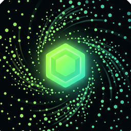

dustyDusty security
How to report a problem, and how to stay safe while you recycle.
Stay safe
- Dusty never asks for your seed phrase or private key. Not in the app, not on X, not in DMs. Anyone who asks is a scammer.
- Dusty never asks you to send tokens to a person. Recycling happens only through the verified Recycler contract, and you confirm every step in your own wallet.
- Approvals are for the exact amount you recycle, never unlimited.
- Only use the official site statxqo-clickit.github.io/dusty and the official X account @DUSTYappsocial.
- Check addresses against the verified contract list. Lookalike "Dusty" tokens exist.
Report a vulnerability
Found a bug in the contracts, the app or this site? Please tell us privately first and give us a fair chance to fix it before sharing it publicly.
- Send a direct message to @DUSTYappsocial on X with "Security" in the first line. Or use GitHub private vulnerability reporting if it is open on the repo.
- Include what you found, the steps to reproduce it, and the contract or page involved.
- Do not include seed phrases, private keys or anyone's personal data. We will never ask for them.
- Please act in good faith: no testing that moves other people's funds, no denial-of-service, no social engineering.
We read every report and aim to reply within 3 days. Machine-readable contact: security.txt.
Scope
The contracts on the contracts page, the Dusty web app and this site. Contracts are unaudited; their source is verified on Basescan.